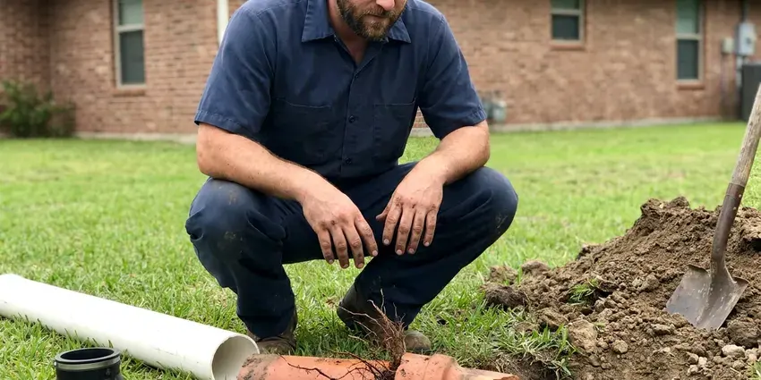

Gas Water Heater Repair in Perris, CA
Pilot light out one more time? FKM Plumbing repairs gas water heaters in Perris, CA, from thermocouples and gas valves to burners and venting.
- Upfront Pricing
- Natural Gas and Propane
- Guaranteed Work
- Licensed Southern California Plumbers

Need Gas Water Heater Repair in Perris, CA?
Every repair includes a gas leak test and a draft check before we wrap up.
Licensed Gas Water Heater Repair Services in Perris, CA
FKM Plumbing repairs atmospheric vent, power vent and direct vent gas water heaters in Perris. We handle thermocouples, thermopiles, pilot assemblies, gas control valves, burner cleaning and flue repairs on natural gas and propane units.
Our expertise includes:
- Pilot Light and Burner Repairs
- Honeywell and White-Rodgers gas control valve diagnosis and replacement
- Tank Leaks and Pressure Issues

Additional Plumbing Repair Services in Perris, CA
We offer expert plumbing repair services across Perris, CA to stop leaks, clear blockages, and keep every fixture working the way it should.


Customers
Why Choose FKM Plumbing for Gas Water Heater Repair in Perris, CA?
Gas water heaters combine fire, fuel and exhaust, so repairs must be done carefully. We test every safety device and confirm proper venting each time.
- Stocked Controls, Universal and brand-specific gas valves and pilot kits are stocked on our trucks.
- Long-Term Fixes, Our repairs focus on durability and efficiency, saving you money in the long run.
- Reliable Parts, We use only high quality, manufacturer approved parts for all gas water heater repairs, for durability.
Citywide Coverage
We repair gas water heaters throughout Perris, whether yours is in a garage, interior closet or exterior enclosure. Fast scheduling is available across town.
Experienced Team
Our technicians are trained on gas controls, combustion and venting, and they repair gas water heaters every week. They know the sealed combustion systems used by Rheem, A.O. Smith and Bradford White.
Safety-First Approach
We always conduct thorough leak detection and operational checks after any gas water heater repair to confirm everything is functioning safely and efficiently. Your peace of mind is our top priority for every service call in Perris, CA.
Trusted Certified Perris Plumbing Services Professionals
At FKM Plumbing, we take pride in providing certified plumbing services throughout Perris, CA. Backed by leading industry credentials, our experienced plumbers combine technical skill with genuine customer care. Whether it is repair, installation, or maintenance, we follow strict safety and quality standards to deliver long-lasting results you can trust.
Call Us Now PHCC Plumbing Contractor Recognition
PHCC Plumbing Contractor Recognition Better Business Bureau (BBB) Accreditation
Better Business Bureau (BBB) Accreditation Angi Certified Pro
Angi Certified Pro ISO 9001 Quality Management Certification
ISO 9001 Quality Management CertificationDependable Gas Water Heater Repair Services in Perris, CA
Thermostat and Gas Valve Repair in Perris, CA
If your gas water heater isn't heating water to the correct temperature, or if it is running too hot, the thermostat or gas valve might be to blame. These components regulate the gas supply and temperature. Our plumbers in Perris, CA can test the thermostat for accuracy and inspect the gas valve for any blockages or faults. We carry a range of replacement parts for various brands, allowing for fast and efficient repairs.

Burner Assembly and Venting System Repair in Perris
A worn burner assembly can result in poor heating or unusual noises. We carefully inspect the burner for blockages, corrosion or wear. We also check the venting system for proper draft and obstructions, which is vital for safe operation and preventing carbon monoxide buildup in your Perris home. Proper venting is a critical safety consideration.
All Major Gas Water Heater Brands Serviced in Perris
Whether you have a Rheem, Bradford White, A.O. Smith or another major brand of gas water heater, our technicians are trained to service them all. We have access to a wide range of parts and the specific diagnostic tools needed for various models. That means your repair is done right the first time, regardless of the brand.
Gas Water Heater Repair Cost in Perris, CA
Thermocouple and pilot repairs usually cost $150 to $350. Gas control valve replacement often runs $350 to $700, and power vent blower repairs can range from $400 to $800. A new gas tank installed typically costs $1,600 to $3,000 depending on size and venting. We help you choose based on tank age and condition.
Gas Water Heater Noise Troubleshooting in Perris
Odd noises coming from your gas water heater, such as rumbling, popping or whistling, often indicate sediment buildup in the tank or a burner problem. Hard water can speed up sediment accumulation. Our repair service includes flushing the tank and inspecting for sediment, addressing pressure issues or checking other components that might be causing the noise, restoring efficiency and quiet operation.
Gas Control Valve Replacement in Perris, CA
The gas control valve regulates temperature and shuts off gas if the pilot goes out. Newer valves from Honeywell and White-Rodgers use status lights that blink codes when something fails. If the valve itself has failed, we replace it with an exact match or listed universal model. We leak test and confirm temperature control afterward.
Commercial Gas Water Heater Repair in Perris, CA
Businesses in Perris, CA depend on a constant supply of hot water for their operations. Our team is equipped to handle the larger, more complex gas water heater systems found in commercial settings. We understand the need for minimal downtime and provide efficient, durable repairs to keep your business running smoothly.

Burner Cleaning and Repair in Perris, CA
A yellow, lazy or noisy flame signals a dirty burner or poor combustion air. We remove and clean the burner, check the orifice size for natural gas or propane and adjust as needed. A clean blue flame heats more quickly and produces less carbon monoxide. We also check for rust flakes dropping from the flue.
Gas Water Heater Repair Near Me in Perris, CA
If you are looking for gas water heater repair near me, you want a technician who is comfortable with gas and venting, not just plumbing. FKM Plumbing sends plumbers trained in both. They repair the heater and verify it is operating safely.
Our team lives and works right here in the Perris area, giving us a solid understanding of the local plumbing landscape and immediate access to your service needs. For dependable, prompt gas water heater repair, you do not have to look any further than FKM Plumbing.
FKM Plumbing at a Glance
- Licensed and insured plumbers serving Perris, CA
- Same-day appointments and 24/7 emergency response
- Clear written estimates, no hidden fees
- 4.8-star rated by 754+ Southern California customers
Perris Map
Perris Information
- Population
- 80,603
- Area codes
- 951/760/909
- Service area
- Perris and communities within 40 miles
- Nearby
- Menifee, Moreno Valley, Lake Elsinore, Hemet
Around Perris, flushing the water heater yearly and cleaning aerators keeps mineral buildup from cutting flow and efficiency. A properly serviced gas water heater is key for steady hot water and for preventing costly damage in Perris homes.
Expert Services
Trust our professionals for reliable FKM Plumbing solutions in Perris, CA.
Our Specialized Plumbing Services in Perris, CA
At FKM Plumbing, we provide a complete range of plumbing services across Perris, CA. From leak detection to full system installations, our team ensures fast, precise, and affordable service for both residential and commercial properties. Explore our core services below:


How Our Gas Water Heater Repair Process Works in Perris, CA
Our gas water heater repair process is designed for clarity, efficiency and limited disruption to your Perris home. We aim to get your hot water running again as quickly as possible.
Request a Quote
Call (213) 871-0701 and describe what is happening, such as no pilot, a status light blinking or a gas smell. If you smell gas, leave the home first and call your gas company.
Inspect and Diagnose
We test the pilot, thermocouple, gas valve, burner and venting. You get a flat price for the repair before we begin.
Repair and Safety Test
We replace the failed parts, light the unit and run it through a heating cycle. Gas connections are leak tested and draft is verified.
Frequently Asked Questions About Gas Water Heater Repair in Perris
The cost of gas water heater repair in Perris, CA can range from $150 to $800, depending on the complexity of the issue and the parts required. Minor repairs like a thermocouple replacement might be on the lower end, while a gas control valve replacement could be higher. We provide a detailed estimate after finding the problem.
FKM Plumbing stands behind our work. All gas water heater repairs performed by our technicians come with a warranty covering both parts and labor. We will provide specific warranty details at the time of service, giving you peace of mind.
This could point to several issues, including a faulty thermostat, a burner that isn't heating efficiently or sediment buildup at the bottom of the tank reducing its capacity. Our plumbers can diagnose the exact cause and recommend the appropriate repair.
Most common gas water heater repairs, such as replacing a thermocouple or thermostat, can be completed within 1 to 3 hours. More complex issues or those requiring special parts might take longer, but we always aim for same-day resolution whenever possible.
FKM Plumbing stands behind our work with a solid warranty on parts and labor for all gas water heater repairs. Specific warranty details will be provided at the time of service, giving you peace of mind for your investment in your Perris, CA home.
Absolutely. Sediment buildup, which is common where water is hard, can insulate the bottom of the tank and make it harder for the burner to heat the water efficiently. This leads to reduced hot water and increased energy bills, and it can even cause premature failure of the unit.
On average, a well-maintained gas water heater can last between 10 to 12 years. Regular maintenance, including flushing the tank, can help extend its lifespan. If your unit is nearing this age and having frequent issues, replacement might be more cost-effective than continuous repairs.
Most repairs are finished the same day in one to two hours. Special order gas valves may take one to three business days.
What People Are Saying About Our Plumbing Experts?

Emily R.
I called FKM Plumbing for plumbing repair, and the technician was fast, polite, and thorough. They explained the problem clearly and fixed it the same day. I will definitely hire them again. Highly recommended!
Plumbing Repair · Murrieta, CA
Laura S.
I scheduled a water heater replacement, and the team made the process smooth and affordable. The new unit works perfectly, and they cleaned up after completing the job.
Water Heater Replacement · Lake Elsinore, CASofia M.
Two new toilets installed in one visit, no mess left behind, and the tech even adjusted a faucet he noticed was dripping. Fair pricing and really friendly.
Toilet Installation · Perris, CA
Mark T.
When our office needed drain cleaning, FKM Plumbing provided quick, reliable service. The plumber arrived on time and made sure every drain flowed perfectly before leaving. Very satisfied.
Drain Cleaning · Moreno Valley, CA
Patricia H.
We had a slab leak that two other companies could not find. FKM Plumbing located it in under an hour, explained our options, and the price matched the quote to the dollar.
Slab Leak Repair · Hemet, CA
Daniel K.
A pipe burst at 11 pm and they actually answered. The plumber showed up within the hour, shut everything down, and had us back to normal the next morning. Could not ask for more.
Emergency Plumbing · Lake Elsinore, CA